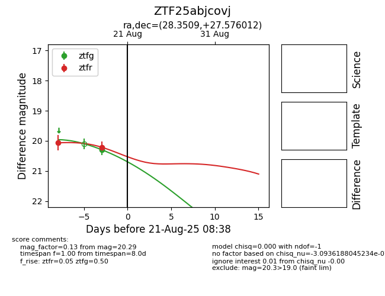

Target ZTF25abjcovj at 2025-08-21 08:38, see:
FINK: fink-portal.org/ZTF25abjcovj
Lasair: lasair-ztf.lsst.ac.uk/objects/ZTF25abjcovj
ALeRCE: alerce.online/object/ZTF25abjcovj
alt names
ZTF25abjcovj (ztf,alerce)
coordinates:
equatorial (ra, dec) = (28.3509,+27.57601)
galactic (l, b) = (139.3883,-33.30784)
photometry
last ztfg=20.29, ztfr=20.21
1 ztfg, 2 ztfr detections
